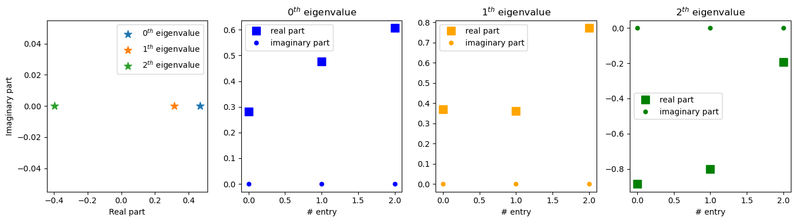

<!DOCTYPE html>


<html lang="en" data-content_root="../" >

  <head>
    <meta charset="utf-8" />
    <meta name="viewport" content="width=device-width, initial-scale=1.0" /><meta name="viewport" content="width=device-width, initial-scale=1" />

    <title>Exercise 12.3 - Autoencoders &#8212; sml report</title>
  
  
  
  <script data-cfasync="false">
    document.documentElement.dataset.mode = localStorage.getItem("mode") || "";
    document.documentElement.dataset.theme = localStorage.getItem("theme") || "";
  </script>
  
  <!-- Loaded before other Sphinx assets -->
  <link href="../_static/styles/theme.css?digest=dfe6caa3a7d634c4db9b" rel="stylesheet" />
<link href="../_static/styles/bootstrap.css?digest=dfe6caa3a7d634c4db9b" rel="stylesheet" />
<link href="../_static/styles/pydata-sphinx-theme.css?digest=dfe6caa3a7d634c4db9b" rel="stylesheet" />

  
  <link href="../_static/vendor/fontawesome/6.5.2/css/all.min.css?digest=dfe6caa3a7d634c4db9b" rel="stylesheet" />
  <link rel="preload" as="font" type="font/woff2" crossorigin href="../_static/vendor/fontawesome/6.5.2/webfonts/fa-solid-900.woff2" />
<link rel="preload" as="font" type="font/woff2" crossorigin href="../_static/vendor/fontawesome/6.5.2/webfonts/fa-brands-400.woff2" />
<link rel="preload" as="font" type="font/woff2" crossorigin href="../_static/vendor/fontawesome/6.5.2/webfonts/fa-regular-400.woff2" />

    <link rel="stylesheet" type="text/css" href="../_static/pygments.css?v=fa44fd50" />
    <link rel="stylesheet" type="text/css" href="../_static/styles/sphinx-book-theme.css?v=a3416100" />
    <link rel="stylesheet" type="text/css" href="../_static/togglebutton.css?v=13237357" />
    <link rel="stylesheet" type="text/css" href="../_static/copybutton.css?v=76b2166b" />
    <link rel="stylesheet" type="text/css" href="../_static/mystnb.4510f1fc1dee50b3e5859aac5469c37c29e427902b24a333a5f9fcb2f0b3ac41.css?v=be8a1c11" />
    <link rel="stylesheet" type="text/css" href="../_static/sphinx-thebe.css?v=4fa983c6" />
    <link rel="stylesheet" type="text/css" href="../_static/sphinx-design.min.css?v=95c83b7e" />
  
  <!-- Pre-loaded scripts that we'll load fully later -->
  <link rel="preload" as="script" href="../_static/scripts/bootstrap.js?digest=dfe6caa3a7d634c4db9b" />
<link rel="preload" as="script" href="../_static/scripts/pydata-sphinx-theme.js?digest=dfe6caa3a7d634c4db9b" />
  <script src="../_static/vendor/fontawesome/6.5.2/js/all.min.js?digest=dfe6caa3a7d634c4db9b"></script>

    <script src="../_static/documentation_options.js?v=9eb32ce0"></script>
    <script src="../_static/doctools.js?v=9a2dae69"></script>
    <script src="../_static/sphinx_highlight.js?v=dc90522c"></script>
    <script src="../_static/clipboard.min.js?v=a7894cd8"></script>
    <script src="../_static/copybutton.js?v=f281be69"></script>
    <script src="../_static/scripts/sphinx-book-theme.js?v=887ef09a"></script>
    <script>let toggleHintShow = 'Click to show';</script>
    <script>let toggleHintHide = 'Click to hide';</script>
    <script>let toggleOpenOnPrint = 'true';</script>
    <script src="../_static/togglebutton.js?v=4a39c7ea"></script>
    <script>var togglebuttonSelector = '.toggle, .admonition.dropdown';</script>
    <script src="../_static/design-tabs.js?v=f930bc37"></script>
    <script>const THEBE_JS_URL = "https://unpkg.com/thebe@0.8.2/lib/index.js"; const thebe_selector = ".thebe,.cell"; const thebe_selector_input = "pre"; const thebe_selector_output = ".output, .cell_output"</script>
    <script async="async" src="../_static/sphinx-thebe.js?v=c100c467"></script>
    <script>var togglebuttonSelector = '.toggle, .admonition.dropdown';</script>
    <script>const THEBE_JS_URL = "https://unpkg.com/thebe@0.8.2/lib/index.js"; const thebe_selector = ".thebe,.cell"; const thebe_selector_input = "pre"; const thebe_selector_output = ".output, .cell_output"</script>
    <script>window.MathJax = {"options": {"processHtmlClass": "tex2jax_process|mathjax_process|math|output_area"}}</script>
    <script defer="defer" src="https://cdn.jsdelivr.net/npm/mathjax@3/es5/tex-mml-chtml.js"></script>
    <script>DOCUMENTATION_OPTIONS.pagename = 'Exercise 12.3/Exercise_12.3_';</script>
    <link rel="index" title="Index" href="../genindex.html" />
    <link rel="search" title="Search" href="../search.html" />
    <link rel="next" title="Exercise 14.X01 - Physics Informed Neural Networks" href="../Exercise%2014.X01/Exercise_14.X01_.html" />
    <link rel="prev" title="Exercise 12.2 - Galerkin method applied to the Kuramoto Sivashinsky dynamical system" href="../Exercise%2012.2/Exercise_12.2_.html" />
  <meta name="viewport" content="width=device-width, initial-scale=1"/>
  <meta name="docsearch:language" content="en"/>
  </head>
  
  
  <body data-bs-spy="scroll" data-bs-target=".bd-toc-nav" data-offset="180" data-bs-root-margin="0px 0px -60%" data-default-mode="">

  
  
  <div id="pst-skip-link" class="skip-link d-print-none"><a href="#main-content">Skip to main content</a></div>
  
  <div id="pst-scroll-pixel-helper"></div>
  
  <button type="button" class="btn rounded-pill" id="pst-back-to-top">
    <i class="fa-solid fa-arrow-up"></i>Back to top</button>

  
  <input type="checkbox"
          class="sidebar-toggle"
          id="pst-primary-sidebar-checkbox"/>
  <label class="overlay overlay-primary" for="pst-primary-sidebar-checkbox"></label>
  
  <input type="checkbox"
          class="sidebar-toggle"
          id="pst-secondary-sidebar-checkbox"/>
  <label class="overlay overlay-secondary" for="pst-secondary-sidebar-checkbox"></label>
  
  <div class="search-button__wrapper">
    <div class="search-button__overlay"></div>
    <div class="search-button__search-container">
<form class="bd-search d-flex align-items-center"
      action="../search.html"
      method="get">
  <i class="fa-solid fa-magnifying-glass"></i>
  <input type="search"
         class="form-control"
         name="q"
         id="search-input"
         placeholder="Search this book..."
         aria-label="Search this book..."
         autocomplete="off"
         autocorrect="off"
         autocapitalize="off"
         spellcheck="false"/>
  <span class="search-button__kbd-shortcut"><kbd class="kbd-shortcut__modifier">Ctrl</kbd>+<kbd>K</kbd></span>
</form></div>
  </div>

  <div class="pst-async-banner-revealer d-none">
  <aside id="bd-header-version-warning" class="d-none d-print-none" aria-label="Version warning"></aside>
</div>

  
    <header class="bd-header navbar navbar-expand-lg bd-navbar d-print-none">
    </header>
  

  <div class="bd-container">
    <div class="bd-container__inner bd-page-width">
      
      
      
      <div class="bd-sidebar-primary bd-sidebar">
        

  
  <div class="sidebar-header-items sidebar-primary__section">
    
    
    
    
  </div>
  
    <div class="sidebar-primary-items__start sidebar-primary__section">
        <div class="sidebar-primary-item">

  
    
  

<a class="navbar-brand logo" href="../intro.html">
  
  
  
  
  
    
    
      
    
    
    
    <script>document.write(``);</script>
  
  
</a></div>
        <div class="sidebar-primary-item">

 <script>
 document.write(`
   <button class="btn search-button-field search-button__button" title="Search" aria-label="Search" data-bs-placement="bottom" data-bs-toggle="tooltip">
    <i class="fa-solid fa-magnifying-glass"></i>
    <span class="search-button__default-text">Search</span>
    <span class="search-button__kbd-shortcut"><kbd class="kbd-shortcut__modifier">Ctrl</kbd>+<kbd class="kbd-shortcut__modifier">K</kbd></span>
   </button>
 `);
 </script></div>
        <div class="sidebar-primary-item"><nav class="bd-links bd-docs-nav" aria-label="Main">
    <div class="bd-toc-item navbar-nav active">
        
        <ul class="nav bd-sidenav bd-sidenav__home-link">
            <li class="toctree-l1">
                <a class="reference internal" href="../intro.html">
                    Welcome to the Scientific Machine Learning Jupyter Book
                </a>
            </li>
        </ul>
        <p aria-level="2" class="caption" role="heading"><span class="caption-text">Exercises</span></p>
<ul class="current nav bd-sidenav">
<li class="toctree-l1"><a class="reference internal" href="../Exercise%20X01.1/ExerciseX01.1_.html">Exercise X01.1 - Integration of Dynamical Systems</a></li>
<li class="toctree-l1"><a class="reference internal" href="../Exercise%201.7/Exercise_1.7_.html">Exercise 1.7 - Singular Value Decomposition</a></li>
<li class="toctree-l1"><a class="reference internal" href="../Exercise%202.3/Exercise_2.3_.html">Exercise 2.3 - Fast Fourier Transform (FFT) for Numerical Integration</a></li>
<li class="toctree-l1 has-children"><a class="reference internal" href="../Exercise%206.1/6.1_toc.html">Exercise 6.1</a><details><summary><span class="toctree-toggle" role="presentation"><i class="fa-solid fa-chevron-down"></i></span></summary><ul>
<li class="toctree-l2"><a class="reference internal" href="../Exercise%206.1/Exercise_6.1_KS_a_b.html">Neural Network for Numerical Integration on the Kuramoto–Sivashinsky (KS) PDE</a></li>
<li class="toctree-l2"><a class="reference internal" href="../Exercise%206.1/Exercise6.1_L_d.html">Neural Network for Predicting the Lorenz System</a></li>
</ul>
</details></li>
<li class="toctree-l1"><a class="reference internal" href="../Exercise%207.4/Exercise_7.4_.html">Exercise 7.4 - SINDy</a></li>


<li class="toctree-l1"><a class="reference internal" href="../Exercise%20X02.1/Exercise_X02_1.html">Exercise X02.1 - Fast Fourier Transform for Point-Wise Gradient Computations</a></li>
<li class="toctree-l1"><a class="reference internal" href="../Exercise%20X03.1/Exercise_X03.1_.html">Exercise X03.1 - Dynamic Mode Decomposition (DMD)</a></li>


<li class="toctree-l1"><a class="reference internal" href="../Exercise%2012.2/Exercise_12.2_.html">Exercise 12.2 - Galerkin method applied to the Kuramoto Sivashinsky dynamical system</a></li>
<li class="toctree-l1 current active"><a class="current reference internal" href="#">Exercise 12.3 - Autoencoders</a></li>
<li class="toctree-l1"><a class="reference internal" href="../Exercise%2014.X01/Exercise_14.X01_.html">Exercise 14.X01 - Physics Informed Neural Networks</a></li>
<li class="toctree-l1"><a class="reference internal" href="../Exercise%2014.X02/Exercise_14.X02_.html">Exercise 14.X02 - Physics-Informed Neural Networks for inverse problems</a></li>
</ul>

    </div>
</nav></div>
    </div>
  
  
  <div class="sidebar-primary-items__end sidebar-primary__section">
  </div>
  
  <div id="rtd-footer-container"></div>


      </div>
      
      <main id="main-content" class="bd-main" role="main">
        
        

<div class="sbt-scroll-pixel-helper"></div>

          <div class="bd-content">
            <div class="bd-article-container">
              
              <div class="bd-header-article d-print-none">
<div class="header-article-items header-article__inner">
  
    <div class="header-article-items__start">
      
        <div class="header-article-item"><button class="sidebar-toggle primary-toggle btn btn-sm" title="Toggle primary sidebar" data-bs-placement="bottom" data-bs-toggle="tooltip">
  <span class="fa-solid fa-bars"></span>
</button></div>
      
    </div>
  
  
    <div class="header-article-items__end">
      
        <div class="header-article-item">

<div class="article-header-buttons">


<div class="dropdown dropdown-source-buttons">
  <button class="btn dropdown-toggle" type="button" data-bs-toggle="dropdown" aria-expanded="false" aria-label="Source repositories">
    <i class="fab fa-github"></i>
  </button>
  <ul class="dropdown-menu">
      
      
      
      <li><a href="https://github.com/executablebooks/jupyter-book" target="_blank"
   class="btn btn-sm btn-source-repository-button dropdown-item"
   title="Source repository"
   data-bs-placement="left" data-bs-toggle="tooltip"
>
  

<span class="btn__icon-container">
  <i class="fab fa-github"></i>
  </span>
<span class="btn__text-container">Repository</span>
</a>
</li>
      
      
      
      
      <li><a href="https://github.com/executablebooks/jupyter-book/issues/new?title=Issue%20on%20page%20%2FExercise 12.3/Exercise_12.3_.html&body=Your%20issue%20content%20here." target="_blank"
   class="btn btn-sm btn-source-issues-button dropdown-item"
   title="Open an issue"
   data-bs-placement="left" data-bs-toggle="tooltip"
>
  

<span class="btn__icon-container">
  <i class="fas fa-lightbulb"></i>
  </span>
<span class="btn__text-container">Open issue</span>
</a>
</li>
      
  </ul>
</div>


<div class="dropdown dropdown-download-buttons">
  <button class="btn dropdown-toggle" type="button" data-bs-toggle="dropdown" aria-expanded="false" aria-label="Download this page">
    <i class="fas fa-download"></i>
  </button>
  <ul class="dropdown-menu">
      
      
      
      <li><a href="../_sources/Exercise 12.3/Exercise_12.3_.ipynb" target="_blank"
   class="btn btn-sm btn-download-source-button dropdown-item"
   title="Download source file"
   data-bs-placement="left" data-bs-toggle="tooltip"
>
  

<span class="btn__icon-container">
  <i class="fas fa-file"></i>
  </span>
<span class="btn__text-container">.ipynb</span>
</a>
</li>
      
      
      
      
      <li>
<button onclick="window.print()"
  class="btn btn-sm btn-download-pdf-button dropdown-item"
  title="Print to PDF"
  data-bs-placement="left" data-bs-toggle="tooltip"
>
  

<span class="btn__icon-container">
  <i class="fas fa-file-pdf"></i>
  </span>
<span class="btn__text-container">.pdf</span>
</button>
</li>
      
  </ul>
</div>


<button onclick="toggleFullScreen()"
  class="btn btn-sm btn-fullscreen-button"
  title="Fullscreen mode"
  data-bs-placement="bottom" data-bs-toggle="tooltip"
>
  

<span class="btn__icon-container">
  <i class="fas fa-expand"></i>
  </span>

</button>


<script>
document.write(`
  <button class="btn btn-sm nav-link pst-navbar-icon theme-switch-button" title="light/dark" aria-label="light/dark" data-bs-placement="bottom" data-bs-toggle="tooltip">
    <i class="theme-switch fa-solid fa-sun fa-lg" data-mode="light"></i>
    <i class="theme-switch fa-solid fa-moon fa-lg" data-mode="dark"></i>
    <i class="theme-switch fa-solid fa-circle-half-stroke fa-lg" data-mode="auto"></i>
  </button>
`);
</script>


<script>
document.write(`
  <button class="btn btn-sm pst-navbar-icon search-button search-button__button" title="Search" aria-label="Search" data-bs-placement="bottom" data-bs-toggle="tooltip">
    <i class="fa-solid fa-magnifying-glass fa-lg"></i>
  </button>
`);
</script>

</div></div>
      
    </div>
  
</div>
</div>
              
              

<div id="jb-print-docs-body" class="onlyprint">
    <h1>Exercise 12.3 - Autoencoders</h1>
    <!-- Table of contents -->
    <div id="print-main-content">
        <div id="jb-print-toc">
            
        </div>
    </div>
</div>

              
                
<div id="searchbox"></div>
                <article class="bd-article">
                  
  <section class="tex2jax_ignore mathjax_ignore" id="exercise-12-3-autoencoders">
<h1>Exercise 12.3 - Autoencoders<a class="headerlink" href="#exercise-12-3-autoencoders" title="Link to this heading">#</a></h1>
<p>In exercise 12.3, we are required to teach a deep neural network autoencoder to build a linear model for the flow around a cylinder. Use high-fidelity flow around a cylinder data to learn a coordinate  (autoencoder) transformation to an (r = 3)-dimensional subspace where the dynamics  is linear and a Koopman operator can be constructed. In the new linear coordinates,  compute the eigenvalues and eigenvectors of the latent state representation. Use the model  to forecast the future state and compare with the high-fidelity simulations.  Exercise 12.4 Learn a deep neural network autoencoder to build a parsimonious,</p>
<div class="cell docutils container">
<div class="cell_input docutils container">
<div class="highlight-ipython3 notranslate"><div class="highlight"><pre><span></span><span class="kn">import</span> <span class="nn">os</span>
<span class="n">os</span><span class="o">.</span><span class="n">environ</span><span class="p">[</span><span class="s2">&quot;KMP_DUPLICATE_LIB_OK&quot;</span><span class="p">]</span><span class="o">=</span><span class="s2">&quot;TRUE&quot;</span>
<span class="n">os</span><span class="o">.</span><span class="n">environ</span><span class="p">[</span><span class="s2">&quot;CUDA_VISIBLE_DEVICES&quot;</span><span class="p">]</span> <span class="o">=</span> <span class="s2">&quot;-1&quot;</span>
<span class="n">os</span><span class="o">.</span><span class="n">environ</span><span class="p">[</span><span class="s1">&#39;TF_CPP_MIN_LOG_LEVEL&#39;</span><span class="p">]</span> <span class="o">=</span> <span class="s1">&#39;3&#39;</span>  

<span class="kn">import</span> <span class="nn">numpy</span> <span class="k">as</span> <span class="nn">np</span>
<span class="kn">import</span> <span class="nn">matplotlib.pyplot</span> <span class="k">as</span> <span class="nn">plt</span>
<span class="kn">import</span> <span class="nn">scipy</span>

<span class="kn">import</span> <span class="nn">tensorflow</span> <span class="k">as</span> <span class="nn">tf</span>
<span class="kn">from</span> <span class="nn">tensorflow.keras.models</span> <span class="kn">import</span> <span class="n">Model</span>
<span class="kn">from</span> <span class="nn">tensorflow.keras</span> <span class="kn">import</span> <span class="n">layers</span><span class="p">,</span> <span class="n">losses</span> <span class="p">,</span> <span class="n">optimizers</span>
</pre></div>
</div>
</div>
</div>
<p>Import the dataset describing the motion of a flid across a cylinder, already used in exercise 3.X01.</p>
<div class="cell docutils container">
<div class="cell_input docutils container">
<div class="highlight-ipython3 notranslate"><div class="highlight"><pre><span></span><span class="n">cylinder_data</span> <span class="o">=</span> <span class="n">scipy</span><span class="o">.</span><span class="n">io</span><span class="o">.</span><span class="n">loadmat</span><span class="p">(</span><span class="s2">&quot;../DATA/CYLINDER_ALL.mat&quot;</span><span class="p">)</span>

<span class="n">m</span> <span class="o">=</span> <span class="n">cylinder_data</span><span class="p">[</span><span class="s1">&#39;m&#39;</span><span class="p">]</span><span class="o">.</span><span class="n">squeeze</span><span class="p">()</span>
<span class="n">n</span> <span class="o">=</span> <span class="n">cylinder_data</span><span class="p">[</span><span class="s1">&#39;n&#39;</span><span class="p">]</span><span class="o">.</span><span class="n">squeeze</span><span class="p">()</span>
<span class="n">X</span> <span class="o">=</span> <span class="n">cylinder_data</span><span class="p">[</span><span class="s1">&#39;VORTALL&#39;</span><span class="p">]</span>
<span class="nb">print</span><span class="p">(</span><span class="n">X</span><span class="o">.</span><span class="n">shape</span><span class="p">)</span>
</pre></div>
</div>
</div>
<div class="cell_output docutils container">
<div class="output stream highlight-myst-ansi notranslate"><div class="highlight"><pre><span></span>(89351, 151)
</pre></div>
</div>
</div>
</div>
<p>Prepare the dataset to train the autoencoder; if we call <span class="math notranslate nohighlight">\(T\)</span> the number of snapshots, <code class="docutils literal notranslate"><span class="pre">input_dataset</span></code> contains the first <span class="math notranslate nohighlight">\(( 0 , ... T-2 )\)</span> snaphots and <code class="docutils literal notranslate"><span class="pre">output_datase</span></code> contains the last <span class="math notranslate nohighlight">\(( 1 , ... T-1 )\)</span> snapshots. The snapshots are then shuffled.</p>
<div class="cell docutils container">
<div class="cell_input docutils container">
<div class="highlight-ipython3 notranslate"><div class="highlight"><pre><span></span><span class="n">input_d</span> <span class="o">=</span> <span class="n">X</span><span class="p">[</span> <span class="p">:</span> <span class="p">,</span> <span class="p">:</span><span class="o">-</span><span class="mi">1</span> <span class="p">]</span>
<span class="n">output_d</span> <span class="o">=</span> <span class="n">X</span><span class="p">[</span> <span class="p">:</span> <span class="p">,</span> <span class="mi">1</span><span class="p">:</span> <span class="p">]</span>

<span class="c1"># Random shuffle.</span>
<span class="n">idx</span> <span class="o">=</span> <span class="n">np</span><span class="o">.</span><span class="n">random</span><span class="o">.</span><span class="n">choice</span><span class="p">(</span> <span class="n">input_d</span><span class="o">.</span><span class="n">shape</span><span class="p">[</span><span class="mi">1</span><span class="p">]</span> <span class="p">,</span> <span class="n">input_d</span><span class="o">.</span><span class="n">shape</span><span class="p">[</span><span class="mi">1</span><span class="p">]</span>  <span class="p">,</span> <span class="n">replace</span> <span class="o">=</span> <span class="kc">False</span> <span class="p">)</span>
<span class="n">input_dataset</span> <span class="o">=</span> <span class="n">input_d</span><span class="p">[</span> <span class="p">:</span> <span class="p">,</span> <span class="n">idx</span> <span class="p">]</span>
<span class="n">output_dataset</span> <span class="o">=</span> <span class="n">output_d</span><span class="p">[</span> <span class="p">:</span> <span class="p">,</span> <span class="n">idx</span> <span class="p">]</span>
</pre></div>
</div>
</div>
</div>
<p>Define the deep autoencoder, which is composed of three main structures:</p>
<ol class="arabic simple">
<li><p><strong>The Encoder:</strong> it is a sequential network composed of six layers, with hidden units which goes from nxm to 3. As its name suggests the encoder encodes one snapshot, <span class="math notranslate nohighlight">\(x_k\)</span>, in a latent space with dimnsion r = 3:</p></li>
</ol>
<div class="math notranslate nohighlight">
\[y_k=\phi(x_k)\]</div>
<ol class="arabic simple" start="2">
<li><p><strong>The Koopeman operator:</strong> two sequential layers with linear activation function and no biases lay in the middle of the deep autoencoder. They encode a Koopeman operator, i.e. a linear map which describes the dynamic between latent state <span class="math notranslate nohighlight">\(k\)</span> and latent state <span class="math notranslate nohighlight">\(k+1\)</span>:</p></li>
</ol>
<div class="math notranslate nohighlight">
\[K_{\Delta t}y_k=y_{k+1}\]</div>
<ol class="arabic simple" start="3">
<li><p><strong>The decoder:</strong> the decoder is equivalent to the encoder, but reversed. It maps the latent state representation of the dynamic system, <span class="math notranslate nohighlight">\(y_{k+1}\)</span>, back to the full starting dimensionality</p></li>
</ol>
<div class="math notranslate nohighlight">
\[x_{k+1}=\phi^{-1}(y_{k+1})\]</div>
<p>A nice picture describing this architecture can be found at page 304 of the book, second edition.</p>
<div class="cell docutils container">
<div class="cell_input docutils container">
<div class="highlight-ipython3 notranslate"><div class="highlight"><pre><span></span><span class="k">class</span> <span class="nc">Autoencoder</span><span class="p">(</span> <span class="n">Model</span> <span class="p">):</span>
  <span class="k">def</span> <span class="fm">__init__</span><span class="p">(</span> <span class="bp">self</span> <span class="p">,</span> <span class="n">input_dim</span> <span class="p">,</span> <span class="n">latent_dim</span> <span class="p">,</span> <span class="n">output_dim</span> <span class="p">):</span>
    
    <span class="nb">super</span><span class="p">(</span> <span class="n">Autoencoder</span> <span class="p">,</span> <span class="bp">self</span> <span class="p">)</span><span class="o">.</span><span class="fm">__init__</span><span class="p">()</span>
    <span class="bp">self</span><span class="o">.</span><span class="n">latent_dim</span> <span class="o">=</span> <span class="n">latent_dim</span>   
    
    <span class="c1"># Encoder.</span>
    <span class="bp">self</span><span class="o">.</span><span class="n">encoder</span> <span class="o">=</span> <span class="n">tf</span><span class="o">.</span><span class="n">keras</span><span class="o">.</span><span class="n">Sequential</span><span class="p">([</span>

    <span class="n">layers</span><span class="o">.</span><span class="n">Dense</span><span class="p">(</span> <span class="nb">int</span><span class="p">(</span> <span class="n">input_dim</span> <span class="o">/</span> <span class="mi">100</span> <span class="p">)</span> <span class="p">,</span> <span class="n">activation</span> <span class="o">=</span> <span class="s2">&quot;selu&quot;</span> <span class="p">,</span> <span class="n">input_shape</span><span class="o">=</span><span class="p">(</span> <span class="n">input_dim</span> <span class="p">,</span> <span class="p">)),</span>
    <span class="n">layers</span><span class="o">.</span><span class="n">Dense</span><span class="p">(</span> <span class="nb">int</span><span class="p">(</span> <span class="n">input_dim</span> <span class="o">/</span> <span class="mi">250</span> <span class="p">)</span> <span class="p">,</span> <span class="n">activation</span> <span class="o">=</span> <span class="s2">&quot;selu&quot;</span> <span class="p">),</span>
    <span class="n">layers</span><span class="o">.</span><span class="n">Dense</span><span class="p">(</span> <span class="nb">int</span><span class="p">(</span> <span class="n">input_dim</span> <span class="o">/</span> <span class="mi">500</span> <span class="p">)</span> <span class="p">,</span> <span class="n">activation</span> <span class="o">=</span> <span class="s2">&quot;selu&quot;</span> <span class="p">),</span>    
    <span class="n">layers</span><span class="o">.</span><span class="n">Dense</span><span class="p">(</span> <span class="nb">int</span><span class="p">(</span> <span class="n">input_dim</span> <span class="o">/</span> <span class="mi">750</span> <span class="p">)</span> <span class="p">,</span> <span class="n">activation</span> <span class="o">=</span> <span class="s2">&quot;selu&quot;</span> <span class="p">),</span>
    <span class="n">layers</span><span class="o">.</span><span class="n">Dense</span><span class="p">(</span> <span class="nb">int</span><span class="p">(</span> <span class="n">input_dim</span> <span class="o">/</span> <span class="mi">1000</span> <span class="p">)</span> <span class="p">,</span> <span class="n">activation</span> <span class="o">=</span> <span class="s2">&quot;selu&quot;</span> <span class="p">),</span>
    <span class="n">layers</span><span class="o">.</span><span class="n">Dense</span><span class="p">(</span> <span class="nb">int</span><span class="p">(</span> <span class="n">input_dim</span> <span class="o">/</span> <span class="mi">1250</span> <span class="p">)</span> <span class="p">,</span> <span class="n">activation</span> <span class="o">=</span> <span class="s2">&quot;selu&quot;</span> <span class="p">),</span>
    <span class="n">layers</span><span class="o">.</span><span class="n">Dense</span><span class="p">(</span> <span class="n">latent_dim</span> <span class="p">,</span> <span class="n">activation</span> <span class="o">=</span> <span class="s2">&quot;selu&quot;</span> <span class="p">),</span>
        
    <span class="p">])</span>
    
    <span class="c1"># Koopeman operator.</span>
    <span class="bp">self</span><span class="o">.</span><span class="n">K</span> <span class="o">=</span> <span class="n">tf</span><span class="o">.</span><span class="n">keras</span><span class="o">.</span><span class="n">Sequential</span><span class="p">([</span> 
        
    <span class="n">layers</span><span class="o">.</span><span class="n">Dense</span><span class="p">(</span> <span class="n">latent_dim</span> <span class="p">,</span> <span class="n">activation</span> <span class="o">=</span> <span class="s2">&quot;linear&quot;</span> <span class="p">,</span> <span class="n">use_bias</span><span class="o">=</span><span class="kc">False</span> <span class="p">),</span>
    <span class="n">layers</span><span class="o">.</span><span class="n">Dense</span><span class="p">(</span> <span class="n">latent_dim</span> <span class="p">,</span> <span class="n">activation</span> <span class="o">=</span> <span class="s2">&quot;linear&quot;</span> <span class="p">,</span> <span class="n">use_bias</span><span class="o">=</span><span class="kc">False</span> <span class="p">)</span>
        
    <span class="p">])</span>
    
    <span class="c1"># Decoder.</span>
    <span class="bp">self</span><span class="o">.</span><span class="n">decoder</span> <span class="o">=</span> <span class="n">tf</span><span class="o">.</span><span class="n">keras</span><span class="o">.</span><span class="n">Sequential</span><span class="p">([</span>
        
    <span class="n">layers</span><span class="o">.</span><span class="n">Dense</span><span class="p">(</span> <span class="n">latent_dim</span> <span class="p">,</span> <span class="n">activation</span> <span class="o">=</span> <span class="s2">&quot;selu&quot;</span> <span class="p">),</span>
    <span class="n">layers</span><span class="o">.</span><span class="n">Dense</span><span class="p">(</span> <span class="nb">int</span><span class="p">(</span> <span class="n">input_dim</span> <span class="o">/</span> <span class="mi">1250</span> <span class="p">)</span> <span class="p">,</span> <span class="n">activation</span> <span class="o">=</span> <span class="s2">&quot;selu&quot;</span> <span class="p">),</span>
    <span class="n">layers</span><span class="o">.</span><span class="n">Dense</span><span class="p">(</span> <span class="nb">int</span><span class="p">(</span> <span class="n">input_dim</span> <span class="o">/</span> <span class="mi">1000</span> <span class="p">)</span> <span class="p">,</span> <span class="n">activation</span> <span class="o">=</span> <span class="s2">&quot;selu&quot;</span> <span class="p">),</span>
    <span class="n">layers</span><span class="o">.</span><span class="n">Dense</span><span class="p">(</span> <span class="nb">int</span><span class="p">(</span> <span class="n">input_dim</span> <span class="o">/</span> <span class="mi">750</span> <span class="p">)</span> <span class="p">,</span> <span class="n">activation</span> <span class="o">=</span> <span class="s2">&quot;selu&quot;</span> <span class="p">),</span>
    <span class="n">layers</span><span class="o">.</span><span class="n">Dense</span><span class="p">(</span> <span class="nb">int</span><span class="p">(</span> <span class="n">input_dim</span> <span class="o">/</span> <span class="mi">500</span> <span class="p">)</span> <span class="p">,</span> <span class="n">activation</span> <span class="o">=</span> <span class="s2">&quot;selu&quot;</span> <span class="p">),</span>
    <span class="n">layers</span><span class="o">.</span><span class="n">Dense</span><span class="p">(</span> <span class="nb">int</span><span class="p">(</span> <span class="n">input_dim</span> <span class="o">/</span> <span class="mi">250</span> <span class="p">)</span> <span class="p">,</span> <span class="n">activation</span> <span class="o">=</span> <span class="s2">&quot;selu&quot;</span> <span class="p">),</span>
    <span class="n">layers</span><span class="o">.</span><span class="n">Dense</span><span class="p">(</span> <span class="nb">int</span><span class="p">(</span> <span class="n">input_dim</span> <span class="o">/</span> <span class="mi">100</span> <span class="p">)</span> <span class="p">,</span> <span class="n">activation</span> <span class="o">=</span> <span class="s2">&quot;selu&quot;</span>  <span class="p">),</span>
    <span class="n">layers</span><span class="o">.</span><span class="n">Dense</span><span class="p">(</span> <span class="n">output_dim</span> <span class="p">,</span> <span class="n">activation</span> <span class="o">=</span> <span class="s2">&quot;linear&quot;</span> <span class="p">),</span>
        
    <span class="p">])</span>

  <span class="k">def</span> <span class="nf">call</span><span class="p">(</span> <span class="bp">self</span> <span class="p">,</span> <span class="n">x</span> <span class="p">):</span>
    
    <span class="n">encoded</span> <span class="o">=</span> <span class="bp">self</span><span class="o">.</span><span class="n">encoder</span><span class="p">(</span> <span class="n">x</span> <span class="p">)</span>
    <span class="n">K</span> <span class="o">=</span> <span class="bp">self</span><span class="o">.</span><span class="n">K</span><span class="p">(</span> <span class="n">encoded</span> <span class="p">)</span>
    <span class="n">decoded</span> <span class="o">=</span> <span class="bp">self</span><span class="o">.</span><span class="n">decoder</span><span class="p">(</span> <span class="n">K</span> <span class="p">)</span>
    
    <span class="k">return</span> <span class="n">decoded</span>
</pre></div>
</div>
</div>
</div>
<p>Compile and fit the model.</p>
<div class="cell docutils container">
<div class="cell_input docutils container">
<div class="highlight-ipython3 notranslate"><div class="highlight"><pre><span></span><span class="n">input_dim</span> <span class="o">=</span> <span class="n">input_d</span><span class="o">.</span><span class="n">shape</span><span class="p">[</span><span class="mi">0</span><span class="p">]</span>
<span class="n">output_dim</span> <span class="o">=</span> <span class="n">output_d</span><span class="o">.</span><span class="n">shape</span><span class="p">[</span><span class="mi">0</span><span class="p">]</span>
<span class="n">latent_dim</span> <span class="o">=</span> <span class="mi">3</span>
<span class="n">autoencoder</span> <span class="o">=</span> <span class="n">Autoencoder</span><span class="p">(</span> <span class="n">input_dim</span> <span class="p">,</span> <span class="n">latent_dim</span> <span class="p">,</span> <span class="n">output_dim</span> <span class="p">)</span>
<span class="n">autoencoder</span><span class="o">.</span><span class="n">compile</span><span class="p">(</span> <span class="n">optimizer</span> <span class="o">=</span> <span class="n">optimizers</span><span class="o">.</span><span class="n">Adam</span><span class="p">(</span> <span class="n">learning_rate</span> <span class="o">=</span> <span class="mf">0.001</span> <span class="p">)</span> <span class="p">,</span> <span class="n">loss</span> <span class="o">=</span> <span class="n">losses</span><span class="o">.</span><span class="n">MeanSquaredError</span><span class="p">()</span> <span class="p">)</span>

<span class="kn">from</span> <span class="nn">keras.callbacks</span> <span class="kn">import</span> <span class="n">EarlyStopping</span>
<span class="n">callback</span> <span class="o">=</span> <span class="n">EarlyStopping</span><span class="p">(</span> <span class="n">monitor</span><span class="o">=</span><span class="s1">&#39;loss&#39;</span> <span class="p">,</span> <span class="n">patience</span> <span class="o">=</span> <span class="mi">50</span> <span class="p">,</span> <span class="n">min_delta</span> <span class="o">=</span> <span class="mf">1e-10</span><span class="p">)</span>

<span class="n">H</span> <span class="o">=</span> <span class="n">autoencoder</span><span class="o">.</span><span class="n">fit</span><span class="p">(</span> <span class="n">input_dataset</span><span class="o">.</span><span class="n">T</span> <span class="p">,</span> <span class="n">output_dataset</span><span class="o">.</span><span class="n">T</span> <span class="p">,</span> <span class="n">epochs</span> <span class="o">=</span> <span class="mi">300</span><span class="p">,</span> <span class="n">batch_size</span> <span class="o">=</span> <span class="mi">200</span> <span class="p">,</span> <span class="n">shuffle</span> <span class="o">=</span> <span class="kc">True</span> <span class="p">,</span> <span class="n">callbacks</span><span class="o">=</span><span class="p">[</span><span class="n">callback</span><span class="p">]</span> <span class="p">,</span> <span class="n">verbose</span> <span class="o">=</span> <span class="mi">0</span> <span class="p">)</span>
</pre></div>
</div>
</div>
</div>
<p>Extract the Koopeman operator, compute its eigenvalues and eigenvectors.</p>
<div class="cell docutils container">
<div class="cell_input docutils container">
<div class="highlight-ipython3 notranslate"><div class="highlight"><pre><span></span><span class="n">K</span> <span class="o">=</span> <span class="n">autoencoder</span><span class="o">.</span><span class="n">K</span><span class="o">.</span><span class="n">layers</span><span class="p">[</span><span class="mi">0</span><span class="p">]</span><span class="o">.</span><span class="n">get_weights</span><span class="p">()[</span><span class="mi">0</span><span class="p">]</span>
<span class="n">Lambdas</span> <span class="p">,</span> <span class="n">Phi</span> <span class="o">=</span> <span class="n">np</span><span class="o">.</span><span class="n">linalg</span><span class="o">.</span><span class="n">eig</span><span class="p">(</span> <span class="n">K</span> <span class="p">)</span>
</pre></div>
</div>
</div>
</div>
<div class="cell docutils container">
<div class="cell_input docutils container">
<div class="highlight-ipython3 notranslate"><div class="highlight"><pre><span></span><span class="n">fig</span> <span class="p">,</span> <span class="n">ax</span> <span class="o">=</span> <span class="n">plt</span><span class="o">.</span><span class="n">subplots</span><span class="p">(</span> <span class="mi">1</span> <span class="p">,</span> <span class="mi">4</span> <span class="p">,</span> <span class="n">figsize</span> <span class="o">=</span> <span class="p">(</span> <span class="mi">14</span> <span class="p">,</span> <span class="mi">4</span> <span class="p">)</span> <span class="p">)</span>
<span class="k">for</span> <span class="n">ii</span> <span class="p">,</span> <span class="n">Lambda</span> <span class="ow">in</span> <span class="nb">enumerate</span><span class="p">(</span> <span class="n">Lambdas</span> <span class="p">):</span>
    <span class="n">ax</span><span class="p">[</span><span class="mi">0</span><span class="p">]</span><span class="o">.</span><span class="n">scatter</span><span class="p">(</span> <span class="n">np</span><span class="o">.</span><span class="n">real</span><span class="p">(</span><span class="n">Lambda</span><span class="p">)</span> <span class="p">,</span> <span class="n">np</span><span class="o">.</span><span class="n">imag</span><span class="p">(</span><span class="n">Lambda</span><span class="p">)</span> <span class="p">,</span> <span class="n">marker</span> <span class="o">=</span> <span class="s2">&quot;*&quot;</span> <span class="p">,</span> <span class="n">s</span> <span class="o">=</span> <span class="mi">100</span> <span class="p">,</span> <span class="n">label</span> <span class="o">=</span> <span class="nb">str</span><span class="p">(</span><span class="n">ii</span><span class="p">)</span><span class="o">+</span><span class="s2">&quot;$^</span><span class="si">{th}</span><span class="s2">$ eigenvalue&quot;</span> <span class="p">)</span>
<span class="n">ax</span><span class="p">[</span><span class="mi">0</span><span class="p">]</span><span class="o">.</span><span class="n">set_xlabel</span><span class="p">(</span><span class="s2">&quot;Real part&quot;</span><span class="p">)</span>
<span class="n">ax</span><span class="p">[</span><span class="mi">0</span><span class="p">]</span><span class="o">.</span><span class="n">set_ylabel</span><span class="p">(</span><span class="s2">&quot;Imaginary part&quot;</span><span class="p">)</span>
<span class="n">ax</span><span class="p">[</span><span class="mi">0</span><span class="p">]</span><span class="o">.</span><span class="n">legend</span><span class="p">()</span>
<span class="n">ii</span> <span class="o">=</span> <span class="mi">0</span>
<span class="k">for</span> <span class="n">phi</span> <span class="p">,</span> <span class="n">c</span> <span class="ow">in</span> <span class="nb">zip</span><span class="p">(</span> <span class="n">Phi</span> <span class="p">,</span> <span class="p">[</span> <span class="s2">&quot;blue&quot;</span> <span class="p">,</span> <span class="s2">&quot;orange&quot;</span> <span class="p">,</span> <span class="s2">&quot;green&quot;</span> <span class="p">]</span> <span class="p">):</span>
    <span class="n">ax</span><span class="p">[</span> <span class="n">ii</span> <span class="o">+</span> <span class="mi">1</span> <span class="p">]</span><span class="o">.</span><span class="n">plot</span><span class="p">(</span> <span class="n">np</span><span class="o">.</span><span class="n">real</span><span class="p">(</span> <span class="n">phi</span> <span class="p">)</span> <span class="p">,</span> <span class="n">marker</span> <span class="o">=</span> <span class="s2">&quot;s&quot;</span> <span class="p">,</span> <span class="n">linestyle</span> <span class="o">=</span> <span class="s2">&quot; &quot;</span> <span class="p">,</span> <span class="n">color</span> <span class="o">=</span> <span class="n">c</span> <span class="p">,</span> <span class="n">markersize</span> <span class="o">=</span> <span class="mi">10</span> <span class="p">,</span> <span class="n">label</span> <span class="o">=</span> <span class="s2">&quot;real part&quot;</span> <span class="p">)</span>
    <span class="n">ax</span><span class="p">[</span> <span class="n">ii</span> <span class="o">+</span> <span class="mi">1</span> <span class="p">]</span><span class="o">.</span><span class="n">plot</span><span class="p">(</span> <span class="n">np</span><span class="o">.</span><span class="n">imag</span><span class="p">(</span> <span class="n">phi</span> <span class="p">)</span> <span class="p">,</span> <span class="n">marker</span> <span class="o">=</span> <span class="s2">&quot;o&quot;</span> <span class="p">,</span> <span class="n">linestyle</span> <span class="o">=</span> <span class="s2">&quot; &quot;</span> <span class="p">,</span> <span class="n">color</span> <span class="o">=</span> <span class="n">c</span> <span class="p">,</span> <span class="n">markersize</span> <span class="o">=</span> <span class="mi">5</span> <span class="p">,</span> <span class="n">label</span> <span class="o">=</span> <span class="s2">&quot;imaginary part&quot;</span> <span class="p">)</span>
    <span class="n">ax</span><span class="p">[</span> <span class="n">ii</span> <span class="o">+</span> <span class="mi">1</span> <span class="p">]</span><span class="o">.</span><span class="n">set_title</span><span class="p">(</span> <span class="nb">str</span><span class="p">(</span><span class="n">ii</span><span class="p">)</span> <span class="o">+</span> <span class="s2">&quot;$^</span><span class="si">{th}</span><span class="s2">$ eigenvalue&quot;</span> <span class="p">)</span>
    <span class="n">ax</span><span class="p">[</span> <span class="n">ii</span> <span class="o">+</span> <span class="mi">1</span> <span class="p">]</span><span class="o">.</span><span class="n">set_xlabel</span><span class="p">(</span><span class="s2">&quot;# entry&quot;</span><span class="p">)</span>
    <span class="n">ax</span><span class="p">[</span> <span class="n">ii</span> <span class="o">+</span> <span class="mi">1</span> <span class="p">]</span><span class="o">.</span><span class="n">legend</span><span class="p">()</span>
    <span class="n">ii</span> <span class="o">=</span> <span class="n">ii</span> <span class="o">+</span> <span class="mi">1</span>
<span class="n">plt</span><span class="o">.</span><span class="n">tight_layout</span><span class="p">()</span>
</pre></div>
</div>
</div>
<div class="cell_output docutils container">

</div>
</div>
<p>Make predictions using the autoencoder and compare with high fidelity simulations. The deep AE looks quite capable to recover the system dynamic throught the latent space.</p>
<div class="cell docutils container">
<div class="cell_input docutils container">
<div class="highlight-ipython3 notranslate"><div class="highlight"><pre><span></span><span class="n">X_pred</span> <span class="o">=</span> <span class="n">autoencoder</span><span class="o">.</span><span class="n">predict</span><span class="p">(</span> <span class="n">input_d</span><span class="o">.</span><span class="n">T</span> <span class="p">)</span>
<span class="n">X_pred</span> <span class="o">=</span> <span class="n">X_pred</span><span class="o">.</span><span class="n">T</span>
<span class="n">X_pred</span> <span class="o">=</span> <span class="n">X_pred</span><span class="o">.</span><span class="n">reshape</span><span class="p">((</span> <span class="n">n</span> <span class="p">,</span> <span class="n">m</span> <span class="p">,</span> <span class="mi">150</span><span class="p">))</span>
</pre></div>
</div>
</div>
<div class="cell_output docutils container">
<div class="output stream highlight-myst-ansi notranslate"><div class="highlight"><pre><span></span>1/5 [=====&gt;........................] - ETA: 0s
</pre></div>
</div>
<div class="output stream highlight-myst-ansi notranslate"><div class="highlight"><pre><span></span>
3/5 [=================&gt;............] - ETA: 0s
</pre></div>
</div>
<div class="output stream highlight-myst-ansi notranslate"><div class="highlight"><pre><span></span>
5/5 [==============================] - ETA: 0s
</pre></div>
</div>
<div class="output stream highlight-myst-ansi notranslate"><div class="highlight"><pre><span></span>
5/5 [==============================] - 0s 33ms/step
</pre></div>
</div>
</div>
</div>
<div class="cell docutils container">
<div class="cell_input docutils container">
<div class="highlight-ipython3 notranslate"><div class="highlight"><pre><span></span><span class="c1"># this code was used to produce the animation below</span>

<span class="c1"># from matplotlib.animation import FuncAnimation</span>
<span class="c1"># import matplotlib as mpl</span>
<span class="c1"># mpl.rcParams[&quot;figure.facecolor&quot;] = &quot;white&quot;</span>
<span class="c1"># from mpl_toolkits.axes_grid1 import make_axes_locatable</span>
    
<span class="c1"># real_data = output_d.reshape(( n , m , 150))</span>
<span class="c1"># predictions = X_pred</span>
<span class="c1"># error = X_pred - output_d.reshape(( n , m , 150))</span>

<span class="c1"># total_frames = predictions.shape[-1]</span>

<span class="c1"># # First set up the figure, the axis, and the plot element we want to animate</span>
<span class="c1"># fig, axes = plt.subplots( 1 , 3 , figsize = ( 10 , 7 ) , sharey = True )</span>


<span class="c1"># labels = [&#39;Simulation&#39;, &#39;Prediction&#39;, &#39;Error&#39;]</span>
<span class="c1"># zz = [real_data,predictions,error]</span>
<span class="c1"># images = []</span>

<span class="c1"># for tt, label, z in zip( range( axes.shape[-1] ) , labels , zz ):</span>
<span class="c1">#     vmin = np.min(z[ : , : , tt ])</span>
<span class="c1">#     vmax = np.max(z[ : , : , tt ])</span>
<span class="c1">#     p = axes[tt].imshow( z[ : , : , tt ] , cmap=&#39;RdBu_r&#39;, vmin = vmin , vmax = vmax )</span>
<span class="c1">#     axes[tt].set_title( label )</span>
<span class="c1">#     images.append( p )</span>
<span class="c1">#     div = make_axes_locatable( axes[tt] )</span>
<span class="c1">#     cax = div.append_axes(&#39;right&#39;, &#39;5%&#39;, pad = 0.1 )</span>
<span class="c1">#     fig.colorbar( p , cax = cax )</span>
<span class="c1"># plt.tight_layout()</span>


<span class="c1"># # animation function.  This is called sequentially</span>
<span class="c1"># def animate(i, zz):</span>
<span class="c1">#     for idx_im, (image, z) in enumerate( zip( images , zz ) ):</span>
<span class="c1">#         image.set_array(z[ : , : , i ])</span>


<span class="c1"># anim = FuncAnimation(fig, lambda i: animate(i, zz), frames=total_frames, interval=5)</span>

<span class="c1"># video_name = &#39;AE_predictions.mp4&#39;</span>
<span class="c1"># anim.save(video_name, fps=total_frames/10, extra_args=[&#39;-vcodec&#39;, &#39;libx264&#39;])</span>
<span class="c1"># plt.close()</span>
</pre></div>
</div>
</div>
</div>
<div class="cell docutils container">
<div class="cell_input docutils container">
<div class="highlight-ipython3 notranslate"><div class="highlight"><pre><span></span><span class="o">%%HTML</span>
<span class="p">&lt;</span><span class="nt">iframe</span> <span class="na">width</span><span class="o">=</span><span class="s">&quot;560&quot;</span> <span class="na">height</span><span class="o">=</span><span class="s">&quot;315&quot;</span> <span class="na">src</span><span class="o">=</span><span class="s">&quot;https://www.youtube.com/embed/WLxJbQU_K68&quot;</span> <span class="na">title</span><span class="o">=</span><span class="s">&quot;YouTube video player&quot;</span> <span class="na">frameborder</span><span class="o">=</span><span class="s">&quot;0&quot;</span> 
<span class="na">allow</span><span class="o">=</span><span class="s">&quot;accelerometer; autoplay; clipboard-write; encrypted-media; gyroscope; picture-in-picture; web-share&quot;</span> <span class="na">allowfullscreen</span><span class="p">&gt;&lt;/</span><span class="nt">iframe</span><span class="p">&gt;</span>
</pre></div>
</div>
</div>
<div class="cell_output docutils container">
<div class="output text_html"><iframe width="560" height="315" src="https://www.youtube.com/embed/WLxJbQU_K68" title="YouTube video player" frameborder="0" 
allow="accelerometer; autoplay; clipboard-write; encrypted-media; gyroscope; picture-in-picture; web-share" allowfullscreen></iframe>
</div></div>
</div>
<p>You can fine the video at this link: <a class="reference external" href="https://youtu.be/WLxJbQU_K68">Autoencoder predictions</a></p>
</section>

    <script type="text/x-thebe-config">
    {
        requestKernel: true,
        binderOptions: {
            repo: "binder-examples/jupyter-stacks-datascience",
            ref: "master",
        },
        codeMirrorConfig: {
            theme: "abcdef",
            mode: "python"
        },
        kernelOptions: {
            name: "python3",
            path: "./Exercise 12.3"
        },
        predefinedOutput: true
    }
    </script>
    <script>kernelName = 'python3'</script>

                </article>
              

              
              
              
              
                <footer class="prev-next-footer d-print-none">
                  
<div class="prev-next-area">
    <a class="left-prev"
       href="../Exercise%2012.2/Exercise_12.2_.html"
       title="previous page">
      <i class="fa-solid fa-angle-left"></i>
      <div class="prev-next-info">
        <p class="prev-next-subtitle">previous</p>
        <p class="prev-next-title">Exercise 12.2 - Galerkin method applied to the Kuramoto Sivashinsky dynamical system</p>
      </div>
    </a>
    <a class="right-next"
       href="../Exercise%2014.X01/Exercise_14.X01_.html"
       title="next page">
      <div class="prev-next-info">
        <p class="prev-next-subtitle">next</p>
        <p class="prev-next-title">Exercise 14.X01 - Physics Informed Neural Networks</p>
      </div>
      <i class="fa-solid fa-angle-right"></i>
    </a>
</div>
                </footer>
              
            </div>
            
            
              
            
          </div>
          <footer class="bd-footer-content">
            
<div class="bd-footer-content__inner container">
  
  <div class="footer-item">
    
<p class="component-author">
By Nicole Rosi & Jens Peter Schøler
</p>

  </div>
  
  <div class="footer-item">
    

  <p class="copyright">
    
      © Copyright 2023.
      <br/>
    
  </p>

  </div>
  
  <div class="footer-item">
    
  </div>
  
  <div class="footer-item">
    
  </div>
  
</div>
          </footer>
        

      </main>
    </div>
  </div>
  
  <!-- Scripts loaded after <body> so the DOM is not blocked -->
  <script src="../_static/scripts/bootstrap.js?digest=dfe6caa3a7d634c4db9b"></script>
<script src="../_static/scripts/pydata-sphinx-theme.js?digest=dfe6caa3a7d634c4db9b"></script>

  <footer class="bd-footer">
  </footer>
  </body>
</html>